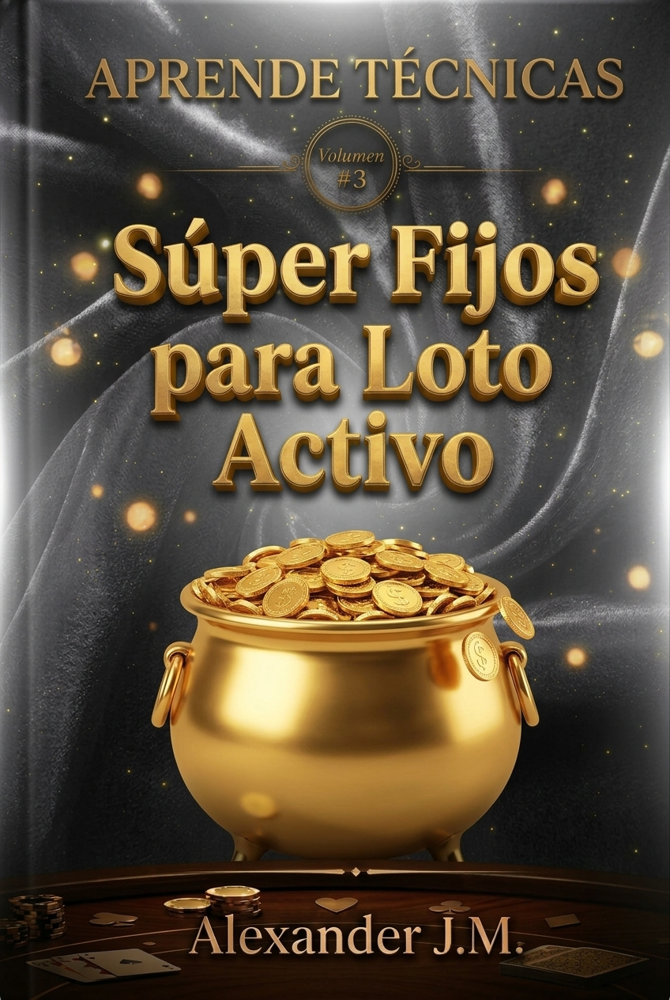

Volumen #3
Súper Fijos para Lotto Activo
Alexander J.M.
© 2026 Alexander J.M. Todos los derechos reservados.
El Lotto Activo es, probablemente, el juego de animalitos más popular de Venezuela. Su dinámica es rápida, sus sorteos son constantes y su matriz es de 38 elementos (los números del 0 al 36, más el 00).
El apostador común se sienta frente a la pantalla y ve una lluvia de números. Su mente no puede procesar ese volumen de información en tiempo real, así que recurre a la corazonada, al sueño o al número que "le gusta". Y la suerte, a largo plazo, siempre favorece a la casa.
Pero para el estratega que domina la técnica de los Súper Fijos, el Lotto Activo no es un caos de 38 números. Es un sistema cerrado donde la memoria de repetición nos revela los números que el algoritmo está utilizando como ancla.
Esta técnica te permite identificar todos los números que están en ciclo activo y determinar cuáles de ellos están listos para salir. Deja de jugar a ciegas y empieza a operar con estructura.
Como vimos en el Volumen 1 y en el Volumen 2, los juegos de animalitos no son un caos absoluto. Son un sistema cerrado donde la frecuencia de los números fluctúa, pero siempre deja una huella.
En el Lotto Activo, esa huella se manifiesta de una forma muy clara: cuando un número se repite en días consecutivos, no es una casualidad. Es una señal de que el sistema está utilizando ese número como un ancla.
Y aquí está la clave que desarrollaremos en este volumen: cuando un número se repite 2 o más veces en los últimos 5 días, entra en una fase activa. Esto genera un bucle repetitivo a su alrededor, produciendo secuencias de números que se repiten de forma casi predecible.
La Regla de Oro del Lotto Activo: Un número que se repite en días consecutivos es un ancla. Y esa ancla arrastra consigo una secuencia de números que el sistema utilizará para equilibrar la matriz.
Si vienes de jugar Guácharo Activo (Volumen 2), sabrás que allí la matriz es de 77 elementos. La lógica de equilibrio es la misma, pero la escala cambia. Aquí, en el Lotto Activo, volvemos a la matriz de 38. El Volumen 1 te da la base para armar las tripletas; este Volumen 3 te enseña a extraer los Súper Fijos con precisión quirúrgica.
Porque no estamos adivinando. Estamos leyendo la huella que el algoritmo deja en el historial. Cuando identificas el Número Base (el ancla) y extraes sus Súper Fijos, no estás jugando a la suerte: estás jugando con la estructura del sistema.
En los siguientes capítulos, desarrollaremos el método paso a paso, con ejemplos reales y la explicación técnica de por qué funciona.
Este es el método fundamental. Vamos a tomar los tres últimos días de resultados del Lotto Activo.
Ejemplo Real:
Vamos a buscar el primer número que se repite entre el día más reciente y el día anterior, empezando desde el primer sorteo del día más reciente.
Día 1: [0] - 1 - 23 - 8 - 34 - 28 - 27 - 3 - 29 - 21 - 33 - 36
Día 2: 28 - 4 - 23 - 22 - 13 - 8 - 9 - 7 - 19 - 24 - 16 - 15
El primer número del Día 1 es el 0. ¿Se repite en el Día 2? No. Entonces, pasamos al segundo número.
Día 1: 0 - [1] - 23 - 8 - 34 - 28 - 27 - 3 - 29 - 21 - 33 - 36
Día 2: 28 - 4 - 23 - 22 - 13 - 8 - 9 - 7 - 19 - 24 - 16 - 15
El segundo número es el 1. ¿Se repite en el Día 2? No. Pasamos al tercero.
Día 1: 0 - 1 - [23] - 8 - 34 - 28 - 27 - 3 - 29 - 21 - 33 - 36
Día 2: 28 - 4 - [23] - 22 - 13 - 8 - 9 - 7 - 19 - 24 - 16 - 15
El tercer número es el 23. ¿Se repite en el Día 2? Sí.
Nota: Como el #23 se repitió, lo tomamos como nuestro Número Base. Este será el punto de partida para nuestra técnica.
Una vez que hemos extraído nuestro Número Base (#23), aplicamos la técnica.
Paso 1: Posicionarnos en el Número Base
Identificamos el #23 en el Día 2 (el día anterior), que es donde se produjo la repetición.
Día 2: 28 - 4 - [23] - 22 - 13 - 8 - 9 - 7 - 19 - 24 - 16 - 15
Paso 2: Tomar los dos números siguientes
Ahora, tomamos los dos números siguientes al #23 en el Día 2. En este caso, los números que siguen al #23 son el 22 y el 13.
Día 2: 28 - 4 - [23] - 22 - 13 - 8 - 9 - 7 - 19 - 24 - 16 - 15
Nuestros Súper Fijos serían: 23 - 22 - 13
Nota: Esta técnica se aplica según tu requerimiento. Puedes tomar los 2 números siguientes, los anteriores, o ambos a la vez.
Ejemplo #1: Tomar los 2 números siguientes (lo que ya hicimos)
23 - 22 - 13
Ejemplo #2: Tomar los 2 números anteriores
Día 2: 28 - 4 - [23] - 22 - 13 - 8 - 9 - 7 - 19 - 24 - 16 - 15
Los números anteriores al #23 son el 4 y el 28.
Súper Fijos: 4 - 28 - 23
Ejemplo #3: Tomar ambos lados (izquierda y derecha)
Día 2: 28 - 4 - [23] - 22 - 13 - 8 - 9 - 7 - 19 - 24 - 16 - 15
Los números anteriores son el 4 y el 28. Los siguientes son el 22 y el 13.
Súper Fijos: 4 - 28 - 23 - 22 - 13
Nota Importante: El tercer caso (tomar ambos lados) solo se aplica si el Número Base (#23) se ha repetido 3 o más veces en los últimos 5 días. Esto indica una saturación del sistema y una mayor probabilidad de que la secuencia sea más amplia.
La consistencia de este método no es una casualidad. Se basa en dos principios fundamentales:
En el próximo capítulo, veremos cómo aplicar este método de forma práctica y cómo construir tus jugadas "Plus" y "Premium" en el Lotto Activo.
Ya tenemos nuestros Súper Fijos extraídos del Capítulo 2. En el ejemplo que venimos trabajando, nuestro Número Base fue el #23, y al tomar los dos números siguientes en el Día 2, obtuvimos nuestra primera jugada directa.
Ahora vamos a definir los dos niveles de jugadas que utilizaremos en este volumen: la Jugada "Plus" (la técnica pura) y la Jugada "Premium" (la técnica expandida con los números que se repiten).
La Jugada "Plus" es la aplicación directa de la técnica de extracción de Súper Fijos que aprendiste en el Capítulo 2. No requiere cálculos adicionales, ni búsquedas extra. Es el resultado de posicionarnos en el Número Base y tomar los dos números que lo acompañan.
Recordemos nuestro ejemplo:
Por lo tanto, nuestra Jugada "Plus" es:
23 - 22 - 13
Nota: Esta es la jugada base. Es la técnica tal cual. Si el sistema responde de forma directa, estos tres números son los que debes atacar.
La Jugada "Premium" es la evolución de la "Plus". Consiste en tomar nuestra Jugada "Plus" (la técnica pura) y añadirle los números que se repiten entre el Día 1 y el Día 2 (los Acompañantes).
Paso 1: Identificar los números que se repiten entre el Día 1 y el Día 2.
Día 1: 0 - 1 - [23] - [8] - 34 - [28] - 27 - 3 - 29 - 21 - 33 - 36
Día 2: [28] - 4 - [23] - 22 - [13] - [8] - 9 - 7 - 19 - 24 - 16 - 15
Observamos que, además del #23 (que ya es la base), los números que se repiten entre ambos días son:
Paso 2: Construir la Jugada "Premium"
Ahora, tomamos nuestra Jugada "Plus" y le agregamos estos números repetidos:
Jugada "Premium" final: 23 - 22 - 13 - 28 - 8
Nota: La Jugada "Premium" es más amplia. Al incluir los números que se repiten entre los dos días más recientes, cubres un espectro mayor del comportamiento del sistema. Es la jugada de mayor cobertura y la que debes priorizar cuando el sistema se muestra activo.
La elección entre "Plus" y "Premium" depende de dos factores:
Hasta ahora, hemos aprendido a extraer los Súper Fijos y a combinarlos en jugadas. Pero, ¿cómo sabemos si la secuencia que hemos identificado está realmente activa? ¿Y si el sistema ha decidido cambiar de ancla y nuestra secuencia ya no es válida?
Aquí es donde entra el Filtro de Confirmación. Este filtro nos permite verificar si los números que hemos calculado están resonando en la matriz del Lotto Activo.
El Filtro de Resonancia se basa en una idea simple: si los números de nuestra secuencia (los Súper Fijos y sus combinaciones) han aparecido en los últimos días, es porque el sistema los está utilizando para equilibrar la matriz. Si no han aparecido, la secuencia puede estar en fase de dilatación o simplemente no ser válida.
Cómo aplicar el Filtro de Resonancia
Tomemos nuestro ejemplo:
Jugada Premium: 23 - 22 - 13 - 28 - 8
Revisamos los últimos 3 días:
Resultado: La secuencia está en resonancia. Todos los números (23, 22, 13, 28, 8) han aparecido en los últimos 3 días. Esto confirma que la secuencia está activa y que podemos operar con ella.
Si al revisar los últimos 3 días descubres que ningún número de tu secuencia ha aparecido, hay dos posibilidades:
Para que la confirmación sea robusta, te recomiendo aplicar este criterio:
Criterio de Confirmación Definitiva: Si el Número Base se ha repetido 2 o más veces en los últimos 3 días, y al menos uno de los Súper Fijos ha aparecido en ese mismo período, la secuencia está en resonancia y puedes operar con ella.
En nuestro ejemplo, el #23 se repitió en el Día 1 y el Día 2 (2 veces en 3 días), y los Súper Fijos (22, 13) también aparecieron. Por lo tanto, la secuencia está confirmada.
Has llegado al final de este tercer volumen. Ahora tienes en tus manos un sistema mecánico, lógico y estructurado para identificar los Súper Fijos del Lotto Activo y determinar cuáles están a punto de explotar.
Pero aquí viene la verdad que nadie te dice: el método, por sí solo, no te hará ganar. La disciplina es lo que marca la diferencia.
He visto a muchos jugadores aplicar la técnica de extracción con precisión matemática y, aun así, perder. ¿Por qué? Porque no respetaron las reglas. Porque se dejaron llevar por la emoción. Porque persistieron en una secuencia que ya no resonaba. Porque apostaron más de lo que podían permitirse perder.
El método te da la estructura. La disciplina te da los resultados.
Regla 1: Nunca juegues una secuencia que no esté resonando.
El Filtro de Confirmación existe por una razón. Si los Súper Fijos no han aparecido en los últimos 3 días, la secuencia no es válida. No importa cuánto "sientas" que van a salir. Si no hay resonancia, no hay jugada.
Regla 2: Nunca persigas las pérdidas.
Si una secuencia no responde en los próximos sorteos, no dupliques la apuesta. No intentes "recuperar" lo perdido. El sistema es frío y calculador. Si no estás en resonancia, simplemente no estás en el momento correcto. Acepta la pérdida y espera la próxima oportunidad.
Regla 3: Nunca apuestes más de lo que puedes permitirte perder.
El Lotto Activo es un juego de probabilidades, no una máquina de hacer dinero. La Técnica de los Súper Fijos te da una ventaja, pero no te garantiza ganar siempre. Define un presupuesto antes de empezar y respétalo. Si pierdes ese presupuesto, detente. El juego seguirá ahí mañana.
Has completado el tercer nivel de la colección. Ahora sabes identificar los Súper Fijos del Lotto Activo y determinar cuáles están a punto de explotar. Pero este es solo el siguiente paso de un camino más largo.
Si quieres convertirte en un verdadero operador táctico, necesitas dominar los niveles de conocimiento de esta colección:
| Nivel | Libro | Qué aprenderás |
|---|---|---|
| Nivel 1: La Base | Volumen 1: Aprende a hacer tus Tripletas | Cómo identificar los números calientes en la matriz de 38 elementos y cómo combinarlos para armar tus jugadas. |
| Nivel 2: La Técnica | Volumen 2: Súper Fijos para Guácharo Activo | Cómo identificar los números calientes en la matriz de 77 elementos y cómo determinar cuáles están a punto de explotar. |
| Nivel 3: La Especialización | Volumen 3: Súper Fijos para Lotto Activo (este libro) | Cómo aplicar la técnica de extracción de Súper Fijos específicamente al Lotto Activo y cómo construir tus jugadas Plus y Premium. |
| Nivel 4: La Maestría | Código 38-N: El Origen del Caos | La física de la matriz, las secuencias continuas, la psicología del operador y el protocolo completo de operación. |
El Volumen 1 te enseña la base. El Volumen 2 te enseña la técnica del Guácharo. Este Volumen 3 te enseña la especialización en Lotto Activo. Y el Código 38-N te enseña la maestría.
No te detengas aquí. El camino del estratega apenas comienza.
El Lotto Activo no es un juego de suerte. Es un sistema cerrado que se rige por reglas de equilibrio. Y una vez que entiendes esas reglas, puedes leer la mesa con claridad.
Pero el conocimiento sin disciplina es inútil. El método sin constancia no da resultados. La técnica sin verificación es solo una apuesta más.
Mi consejo final es este: sé paciente, sé disciplinado, sé frío. No juegues por jugar. Juega cuando las probabilidades estén de tu lado. Y cuando ganes, retírate. Cuando pierdas, acepta la pérdida y espera la próxima oportunidad.
El Lotto Activo te espera. Y ahora, con la Técnica de los Súper Fijos en tu arsenal, tienes las herramientas para enfrentarlo con estructura.
Nos vemos en el siguiente nivel.
FIN DEL VOLUMEN 3
APRENDE TÉCNICAS
Súper Fijos para Lotto Activo
Alexander J.M.